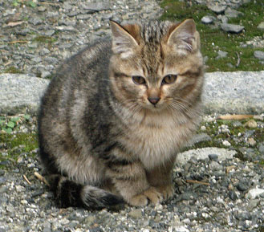

サンプルページ
にゃばたーリスト
にゃばたーリストのサンプルページです．#nyavatar-listの中に，.nyavatar-thumbnailを沢山入れることでにゃばたーリストを実現しています．
にゃばたーリストは横幅400px，にゃばたーサムネイルは300pxで固定しています．サムネイルの大きさを可変にしてしまうと，画面の大きさによってレイアウトが安定しないので固定しています．変更する必要が出た場合は変更します．
ソースコード
<div class="nyavatar-list">
<div class="nyavatar-thumbnail">
<div class="nyavatar-heading">
<img src="images/nyavatar.png">
<h4>にゃんこたろう</h4>
</div>
<div class="nyavatar-body">
<div class="pull-left">
<img src="images/neko-img.jpg" class="nyavatar-image">
</div>
<div class="nyavatar-status">
<ul>
<li>主な生息地: <span class="place">京都府</span></li>
<li>最終発見報告: <span class="date">2015/10/16</span></li>
<li>総合評価 <span class="review">☆☆☆☆☆</span></li>
</ul>
</div>
</div>
<div class="clearfix"></div>
<div class="nyavatar-footer">
<div class="btn btn-default">詳細</div>
<div class="btn btn-warning">迷子猫</div>
<div class="btn btn-primary">発見</div>
</div>
</div>
:
</div>
動作例
にゃんこたろう

- 主な生息地: 京都府
- 最終発見報告: 2015/10/16
- 総合評価 ☆☆☆☆☆
にゃんこたろう
- 主な生息地: 京都府
- 最終発見報告: 2015/10/16
- 総合評価 ☆☆☆☆☆
にゃんこたろう
- 主な生息地: 京都府
- 最終発見報告: 2015/10/16
- 総合評価 ☆☆☆☆☆